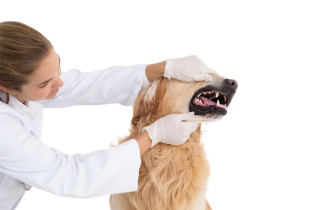
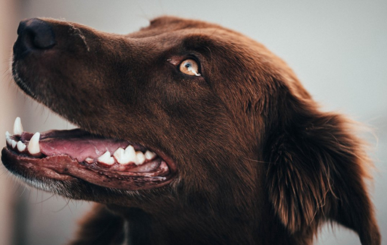

Сейчас рекомендации ветеринара полечить зубы или заняться профилактикой болезней полости рта питомца не вызывают удивления. У собак и кошек, по сравнению с людьми, меньше проблем с зубами, но они, тем не менее, требуют некоторой заботы. Болезни периодонта – самая частая причина обращений к ветврачу-стоматологу собак и кошек старше 3-5 лет, особенно у мелких пород собак и экзотических кошек. При этих болезнях происходит накопление на зубах зубного налёта и зубного камня, которые сами не счищаются с поверхности зубов. Зубной камень шершавый, сам по себе вызывает раздражение щёк, языка, дёсен с образованием язв. В нём содержится огромное количество микробов, которые вызывают воспаление десны и её отслоение от зубов. Вследствие чего могут появиться зубодесневые карманы, углубляющиеся в челюстную кость. Микробы, их кислоты и токсины разрушают как сами зубы, так и периодонтальную связку, удерживающую их в челюстях. В крайне запущенных случаях и при общих заболеваниях животного такое разрушение может привести к патологическим переломам нижней челюсти; гнойный процесс разъедает верхнюю челюсть, распространяется в нос, глаз, и, если доходит до оболочек головного мозга, становится опасен для жизни. Зубы расшатываются, могут сами выпадать – так организм защищается от инфекции.

В чём же должна заключаться забота владельцев, заводчиков и помощь ветврача?
Заводчикам, экспертам-кинологам и фелинологам известно, что у некоторых линий и пород (например, коккер-спаниель, пудель, йоркширских терьер, персидские кошки) есть наследственная предрасположенность к болезням периодонта. Таких животных нежелательно использовать в разведении. Заболевания, проявляющиеся в полости рта плохой гигиеной, нарушением прорезывания, зубной формулы и прикуса, могут косвенно свидетельствовать о дисплазиях соединительной ткани. Дисплазии могут быть породным признаком, но чаще проявляются малыми аномалиями развития. Например, отсутствие одного или нескольких зубов, наклон клыков вперёд – это «малая аномалия», которая может случайно проявиться у любой собаки и свидетельствовать об эктодермальных дисплазиях. Заводчики должны контролировать разведение проблемных собак и предупреждать покупателей щенков, что за собакой нужен соответствующий уход: удаление молочных зубов в сменном прикусе, домашний гигиенический уход за зубами. Также вашим питомцам необходима регулярная, обычно раз в год, чистка зубов в условиях клиники, а то и удаление, если они нефункциональны и безнадёжны – профессиональная гигиена или санация полости рта. В зависимости от сложности работы, риска вмешательства и послушности животного профессиональная гигиена или санация может быть работой разного уровня. Если нужно снять зубной камень лишь на нескольких поверхностях отдельных зубов у доброжелательного животного – процедуру можно провести вручную, без наркоза и седации. Седация проводится если работа небольшая, но пациент волнуется и не хватает терпения выдержать большой объём работы. Седация – современная техника анестезии, позволяющая комфортно перенести большинство неприятных медицинских процедур. Введение препарата-релаксанта производится непосредственно в клинике за 10-30 минут до приёма, либо заранее, ещё дома или по дороге. Обычно такая анестезия проводится при повторных посещениях, когда объём вмешательств известен, а поведение пациента предсказуемо. Для механического снятия зубных отложений используются специально заточенные ручные инструменты. Для быстрого и аккуратного удаления большого количества зубного камня ветврач может воспользоваться ультразвуковым скейлером. Это довольно неприятная процедура, как правило, требующая наркоза. Наркоз (общая анестезия) необходим, при длительном и болезненном вмешательстве, в противном случае животное не позволит врачу качественно сделать свою работу в полном объёме. Также наркоз используется если работа безболезненна, но требуется полная неподвижность животного. Общая анестезия практически безопасна у молодых здоровых животных, но чем старше возраст, тем хуже общее состояние пациента. Чем больше текущих и перенесенных болезней, тем выше риск полного отключения сознания. Почти все достижения и возможности “человеческой” стоматологии сейчас доступны и в условиях частной ветеринарной практики. Поэтому если у Ваших питомцев есть стоматологические проблемы – обращайтесь, как правило, их можно решить.
